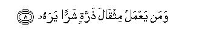

بسم الله الرحمن الرحيم
Sayyid Abul Ala Maududi - Tafhim al-Qur'an - The Meaning of the Qur'an
 99.
Surah Az Zalzala (The Earthquake)
99.
Surah Az Zalzala (The Earthquake)
It is derived from the word zilzal in the first verse.
Whether or not it was revealed, at Makkah or Madinah, is disputed. Ibn Masud, Ata, Jabir, and Mjahid say that it is a Makki Surah and a statement of Ibn Abbas also supports this view. On the contrary, Qatadah and Muqatil say that it is Madani and another statement of Ibn Abbas also has been cited in support of this view. That it is a Madani Surah is reasoned from a tradition from Hadrat Abu Said Khudri, which Ibn Abi Hatim has related from him. He says: "When the verse Fa-man ya mal mithqala dharratin khairan yarah, wa man ya mal mithqala dharratin sharran yarah, was revealed, I said: "O Messenger of Allah, shall I really see my deeds? The Holy Messenger replied in the affirmative. I submitted: And every major sin? He replied yes. I said: And the minor sins too? He replied yes. Thereupon I exclaimed that I would then be ruined. The Holy Prophet said: Rejoice, O Abu Sa'id, for each good act will be equal to ten good acts like it." The basis of the argument for this Surah's being Madani is that Hadrat Abu Sa'ld Khudri was an inhabitant of Madinah and reached maturity after the Battle of Uhud. Therefore, if this Surah was revealed in his presence, as is apparent from his statement, it must be a Madani Surah. However, the practice that the Companions and their immediate successors followed in respect of the occasion of the revelation of the verses and Surahs, has already been explained in the Introduction to Surah Ad-Dahr above. Therefore, a Companion's saying that a verse was sent down on this or that particular occasion is no proof that it was sent down on that very occasion. It may well be that after coming of age when Hadrat Abu Sa'id heard this Surah for the first time from the Holy Prophet, terrified by its last portion he might have asked the Holy Prophet the questions which we have cited above, and he might have narrated the incident saying that when this verse was revealed he put this and this question to the Holy Prophet. In the absence of this tradition every reader who reads the Qur'an with understandings will feel that it is a Makki Surah. More than that: from its theme and style he would feel that it must have been sent down in the earliest stage at Makkah when the fundamental principles and beliefs of Islam were being presented before the people in a concise but highly effective way.
Its theme is the second life after death and presentation in it before man of the full record of the deeds done by him in the world. In the first three sentences it has been told briefly how the second life after death will take place and how confounding it will be for man. In the next two sentences it has been said that this very earth on which man has lived and performed all kinds of deeds thoughtlessly, and about which he never could fancy that this lifeless thing would at some time in the future bear witness to his deeds, will speak out on that Day by Allah's command and will state in respect of each individual person what act he had committed at a particular time and place. Then, it has been said that men on that Day, rising from their graves, will come out in their varied groups from all corners of the earth, to be shown their deeds and works, and their presentation of the deeds will be so complete and detailed that not an atom's weight of any good or evil act will be left unnoticed or hidden from his eyes.

In the name of Allah, the Compassionate, the Merciful.

[1-8] When the earth is shaken with her utmost shaking,1 and the earth casts out all the burdens from within her,2 and man says, "What has befallen her?"3 On that Day shall she relate whatever had happened (on her),4 for your Lord shall have commanded her (to do so). On that day, men shall turn up in sundry groups5 to be shown their deeds.6 Then, whoever has done an atom's weight of good, shall see it; and whoever has done an atom's weight of evil, shall see it.7
1Zalzalah means to shake violently over and over again. Thus, zulzilat-il,ardu means that the earth will be shaken violently by convulsion after convulsion, and since shaking of the earth has been mentioned, it automatically gives the meaning that the entire earth will be shaken and not a limited territory of it. Then, in order to express the great intensity of the earthquake the word zilzalaha has been added, which literally means "its being shaken". It mean: "It will be so shaken as a huge sphere like it ought to be shaken, or shaken to its utmost intensity." Some commentators have taken it to imply the first earthquake with which the first stage of Resurrection will begin, i:e. when all living beings will perish and the present order of the world will be upset. But, according to a large section of them, ii implies the earthquake with which the second stage of Resurrection will begin, i. e. when all the former and the latter generations of mankind will rise back to life. This second commentary seems to be more correct, for the whole subsequent theme supports it.
2This same has been expressed in Surah Al-Inshiqaq: 4, thus: "And throws out whatever is within it, and becomes empty." It has several meanings:
(1) It will cast out bodies of the dead in whatever form and state and wherever they may be lying in the earth; and the following sentence indicates that at that time all the scattered parts of the bodies will reassemble and be resurrected once again in the same form and shape as they had been in their first life, for if it were not so, how will they say: "What has happened to the earth ?" It will not only cast out the dead bodies of men but also all traces and evidences of the words, deeds and activities of their former life lying buried in it; the following sentence points out that the earth will narrate all that had happened on its back.
(2) A third meaning also has been given by some Commentators, saying that it will cast out the treasures of gold, silver, jewels and every kind of wealth lying hidden in the earth's belly and man will see it and realize how he thirsted for these things in the world: how he committed murders. thefts, robberies and piracies in the land and sea, usurped the rights of others, waged wars and devastated vast populations. On that Day all that will lie heaped up before him, yet of no avail, but will rather become a means of punishment for him.
3Man here may as well imply every man, for after resurrection and coming to senses the first impression of every man will be as to what was happening around him; afterwards he will realize that it was the Resurrection Day. Man may also imply the man who denies the Hereafter, for what he regarded as impossible would be happening in front of him and causing him confusion and bewilderment. As for the believers, they will not be bewildered and' confused, for . everything would be taking place according to their belief and conviction. To an extent, this second meaning is supported by verse 52 of Surah Ya Sin, in which it has been said that the deniers of the Hereafter at that time will exclaim: "Ah, who has roused us from our sleeping-place?" .And the reply given would be: "This is the same which the Merciful God had promised; and the Messengers sent by God had spoken the truth." This verse does not expressly say that this answer to the disbelievers would actually be given by the believers, for there is no indication of it in the verse. The probability, however, is that the believers will give them this answer.
4According to Hadrat Abu Hurairah, the Holy Prophet (upon whom be peace) recited this verse and asked: "Do you know what annals it will relate ?" The people said: "Allah and His Messenger have the best knowledge." Thereupon the Holy Prophet said: "The annals are that the earth will testify to the deeds which every man and woman has done on its back." She will say: "He or she had done such and such a thing on such and such a day. These will be the annals the earth will narrate." (Musnad Ahmad, Tirmidhi, Nasa'i, Ibn Jarir, 'Abd bin Humaid, Ibn al-Mundhir, Hakim, Ibn Marduyah, Baihaqi in Ash-Sbu'ab). According to Hadrat Rabi'al-Kharashi, the Holy Prophet said: "Beware of the earth, for it is your root and basis, and there is nothing which a person does on it, and it will not report, whether it is good or bad." (Mu jam at-Tabarani). Hadrat Anas reports that the Holy Prophet said: "The earth on the Day of Resurrection will bring out every act that would have been done on its back. Then he recited these verses." (Ibn Marduyah, Baihaqi). About Hadrat 'Ali it is related that when he distributed the money of the Bait al-Mal (public treasury) among the needy ones and thus emptied it, he would perform two rakahs of the Prayer in it and say: "You will have to bear witness that I filled you with justice and emptied you with justice."
It might have been difficult for a man of ancient times to understand how the earth will speak and narrate the annals and events happening on it on the Resurrection Day, but in the present age of scientific discoveries and the inventions of cinema, loudspeaker, radio, television, tape-recorder, electronic equipment, etc., it is no longer difficult to understand how the earth will narrate its annals. The impression of whatever man speaks is preserved in the air, in the radio waves, on the particles of the walls and floors and ceilings of the houses, and on the environments of the road, plain or field if he spoke outside the house. If Allah so wills He can make these things repeat all these voices precisely in the way these were uttered in the first instance by man. Man at that time will hear with his ears and know that it was his own voice, and all his acquaintances also will testify that whatever they were hearing was the person's own voice and his own accent. Then whatever man has done anywhere on the earth, and in whatever state, has had its impression on everything of the environment and its image inscribed on it. Even if he did something in pitch dark, there are such rays in the Kingdom of God for which darkness and light make no difference; they can preserve his image in any case. All these images will pass before man on the Resurrection Day like a motion picture, and will show him when and where he had done something during his life on the earth.
The fact is that although Allah directly knows whatever a man does, yet in the Hereafter when He will establish His Court, He will punish every culprit only after fulfilling all the demands of justice. Any case which is brought before His Court against a criminal will be proved with such perfect evidence that no room will be left to doubt his being a criminal. The first and foremost evidence against him is the record in which the two recording angels are recording his each word and deed. (Qaf: 17-18, AI-Infitar: 10-12). This record will be handed over to him and he will be asked to read it, for "you yourself suffice as reckoner against yourself." (Bani Isra'il: 14). Reading it man will be bewildered, for "it has left nothing un-recorded of our deeds, small or great." (Al-Kahf: 49). Then there is man's own body which he had used in the world. In Allah's Court his own tongue will bear witness as to what he had been speaking through it in the world, his own hands and feet will bear witness as to what deeds he had committed through them (An-Nur: 24). His eyes and his ears will bear witness as to what he saw and heard by their means. Even the skin of his body will bear witness to his deeds. Bewildered he will ask his limbs, "Why have you borne witness against me?" They will reply: "The same God Who has given speech to everything has given us speech." (Ha Mim As-Sajdah: 20-22). On top of these, there will be the witnesses which will be presented from the earth and all its environments, in which man will hear his own voice by his own ears and see the exact pictures of his own deeds by his eyes. Furthermore, the ideas, motives and aims hidden in the heart of man and the intentions with which he had performed every deed will be brought out and placed before him as is stated in Surah Al-`Adiyat below. That is why with the production of such absolute, clear and undeniable proofs, man will be confounded and he will be left with no chance to say anything in self-defense to excuse himself. (Al-Mursalat 35-36)
5This can have two meanings:
(1) That each man with present himself in his own individual capacity--families, groups, parties, nations, all will scatter away. This thing has been said at other places also in the Qur'an, e.g., according to Surah Al-An`am 94, Allah on that Day will say to the people "So, you have come before Us all alone, as We created you at first", and in Surah Maryam: "He will appear before Us all alone" (v 80), and "Everyone of them will be presented before Him individually on the Resurrection Day" (v 95)
(2) That the people who during thousands and thousands of years had died at different places; will be rising from different corners of the earth and proceeding in groups, as has been said in Surah An-Naba "The day the Trumpet is blown, you will come out in crowds." (v 18)
Apart from these, there is no room in the word ashtatan for the meanings, which different commentators have given, and are, therefore, outside the literal bounds of this word, although they are correct by themselves and in accordance with the conditions depicted of the Resurrection Day in Qur'an and the Hadith.
6This can have two meanings:
(1) That they are shown their deeds, i. e. , each one told what he did in the world; and
(2) that they are shown the rewards of their deeds.
Although this second meaning also can be taken of the words li yurau' jaza'a a malahum (so as to be shown the rewards of their deeds) but li yurau' a malahum (so as to be shown their deeds). Therefore, the first meaning only is preferable, especially when at several places in the Qur'an it has been stated clearly that the disbeliever and the believer, the righteous and the wicked, the obedient and the disobedient, all will be given their records (e.g. see Al-Haqqah: 19, 25; Al-Inshiqaq: 7, 10). Evidently, there is no difference between showing somebody his deeds and handing over to him his record. Furthermore, when the earth will narrate whatever had happened on her, the whole picture of the conflict between the Truth and the falsehood that has been raging since the beginning of time and will continue to rage till the end, also will appear before the people and they will see what part the truth-loving people played in it and what vile deeds did the supporters of falsehood commit against them. It may well be that the people will hear with their own ears all the speeches and dialogues of the callers to right guidance and of the publicists of error and evil; the whole record of the writings and literature produced by the two sides will be placed intact before them, and the people gathered together in the Plain of Assembly will see with their own eyes the persecution of the lovers of Truth by the worshipers of falsehood and all the scenes of the bitter conflict that raged between the two parties.
7A simple and straightforward meaning of this statement, and it is right and correct, is that not an atom's weight of good or evil done by a person, will have been left unrecorded in his conduct book, and he will see it in any case. But if seeing is taken to imply seeing its reward and punishment, it will be wrong to take it in the meaning that in the Hereafter every person will be rewarded for his most minor offence, and no one will be left un-rewarded for a good and unpunished for an evil done by him. For in the first place, it would mean that each evil act will be punished and each good act rewarded separately; secondly, it also means that no believer, however righteous and virtuous, will remain safe from being punished for a most ordinary error, and no disbeliever, however wicked and iniquitous, will be left unrewarded for a most ordinary good act, Both these meanings are opposed not only to the explanations given in the Qur'an and the Hadith, but also to reason. From the point of view of reason, it is not understandable that a master would refuse to pardon a most loyal and dutiful servant for a most minor error, and along with rewarding for each act of service and obedience, would also punish him for each and every error. Likewise, this also is not understandable from the viewpoint of reason that a person brought up and favoured by you should prove disloyal and treacherous and ungrateful in spite of your favors, and you, over-looking his collective attitude, should punish him for each act of treachery separately and reward him for each, even if most insignificant, act of service separately. As for the Qur'an and the Hadith, they have laid down a detailed law of rewards and punishments for the different categories of the people, be they believers, hypocrites, disbelievers, righteous believers; erring believers, wicked and sinful believers, common disbelievers, or wicked and mischievous disbelievers, and these rewards and punishments pervade the entire life of man, from there to the Hereafter.
In this connection, the Qur'an has stated, in principle, certain things explicitly:
First, that the deeds of the disbelievers, idolaters and hypocrites (i.e., the deeds regarded as virtuous) have been rendered vain; they will receive no reward for them in the Hereafter; if at all they deserve a reward for them, they will receive it here in the world. For this, see Al-A'raf: 147, At-Taubah: 17, 67-69; Hud: 15-16; Ibrahim: 18; Al-Kahf: 104-105; An-Nur: 39; Al-Furgan: 23; AlAhzab: 19; Az-Zumar: 65; Al-Ahqaf: 20.
Second, that evil will be punished to the extent that evil has been committed, but the good deeds will be rewarded much more generously than what they will actually deserve. At some places it has been explicitly stated that a good act will have a ten-fold reward for it, and at others that Allah will increase the reward of the good act as much as He will please. For this, see AI-Baqarah: 261, AI-An`am: 160, Yunus: 26-27, An-Nur: 38, Al-Qasas: 84, Saba: 37, Al Mu'min:40.
Third, that if the believers abstained from major sins, their ordinary offenses will be forgiven. (An-Nisa': 31, Ash-Shura: 37, An-Najm: 32).
Fourth, that the righteous believer shall have an easy reckoning, his evils will be overlooked and he will be rewarded according to his best deeds. (Al`Ankabut: 7, Az-Zumar: 35, Al-Ahqaf: 16, Al-Inshiqaq: 8).
The Hadith also is very explicit in this regard. In the commentary of Sarah Al-Inshiqaq above, we have cited the Ahadith which have been reported from the Holy Prophet in connection with the explanation of easy reckoning and severe accountability. (See E.N. 6 of Al-lnshiqaq). Hadrat Anas says that once Hadrat Abu Bakr Siddiq was having his meals with the Holy Prophet (upon whom be peace). In the meantime this verse was revealed. Hadrat Abu Bakr withdrew his hand from food and said: "O Messenger of Allah, shall I see the result of every little evil that I have happened to commit?" The Holy Prophet replied: "O Abu Bakr, whatever unpleasant and troublesome things you experience in the world, will compensate for the little evils that you happened to commit, and Allah is reserving every little good that you do for your Hereafter," (Ibn Jarir, Ibn Abi Hatim, Tabarani in AI-Ausat, Baihaqi in Ash-shu ab. Ibn al-Mundhir, Hakim, Ibn Marduyah, `Abd bin Humaid). The Holy Messenger of Allah had explained this verse also to Hadrat Abu Ayyub Ansari, saying: "Whoever from among you dces good will have his reward in the Hereafter, and whoever commits an evil will suffer punishment for it in this very world in the form of misery and disease. (Ibn Marduyah). Qatadah has related this saying of the Holy Prophet (upon whom be peace) on the authority of Hadrat Anas: "Allah does not wrong a believer in the world: He provides him sustenance in lieu of his good deeds; in the Hereafter He will reward him for these. As for the disbeliever, he is recompensed for his good deeds in the world itself; then when Resurrection takes place, he, will have no good work left to his credit." (lbn Jarir). Masruq has related from Hadrat `A'ishah that she asked the Holy Prophet "In the pre-Islamic days of ignorance `Abdullah bin Jud`an treated his kindred kindly, fed the poor, received his guests well, earned freedom for the captives. Will this be of any use to him in the Hereafter ? The Holy Prophet replied: No, he never said omit death: Rabbighfir-li khati'ati yaum ad-din. `My Lord, forgive me my errors on the Judgement Day. " (lbn Jarir) The Holy Prophet gave similar replies also in respect of the other people, who did good deeds in the pre-Islamic days, but died as pagans. But there are certain other sayings of the Holy Prophet, which show that although the good done by a disbeliever cannot save him from the fire of Hell, yet in Hell he will not be subjected to the severe punishment which will be the lot of the wicked, sinful and villainous disbelievers, e.g. according to a Hadith, Hatim Ta'i in view of his generosity will be subjected to a light punishment in Hell (Ruh al-Ma `ani).
However, this verse warns man of a truth of vital importance which is this: Even a most ordinary good has its own weight and its own value, and the same is also true of evil: even a most ordinary evil will also be considered and taken into account; it will not just be overlooked. Therefore, no good act, however small and insignificant, should be left, undone, for many such good acts can collect and be regarded as a major good not in the reckoning with Allah. Likewise, even a most ordinary evil also should not be committed, for a large number of such ordinary errors can become serious sins. The same thing has been described by the Holy Prophet (upon whom be peace) in several Ahadith. According to, a tradition related in Bukhari and Muslim, on the authority of Hadrat `Adi bin Hatim, the Holy Prophet said: "Save yourselves from the fire of Hell even if it be by giving away a bit of a date, or by uttering a good word." Again from Hadrat `Adi, in an authentic tradition, the Holy Prophet's saying has been reported: "Do not look upon any good work as insignificant, even if it be emptying a bucket into the vessel of one asking for water, or receiving a brother. of yours with a pleasant face. " According to a tradition reported in Bukhari from Hadrat Abu Hurairah, the Holy Prophet, addressing the women, said: "O Muslim women, no woman should look upon sending a gift to her neighbor as mean, even if it be the hoof of a goat." A tradition has been related in Musnad Ahmad, Nasa'i and Ibn Majah from Hadrat 'A'ishah, saying that the Holy Prophet said: "O `A'ishah, abstain from the sins which are looked upon as trivial, for they too will be inquired about by Allah." Musnad Ahmad contains a tradition from Hadrat `Abdullah bin Mas'ud, saying that the Holy Prophet said: "Beware of minor sins, for they will gather together on man so much so that they will kill him. " (For the distinction between the grave and the trivial offenses., see E.N. 53 of An-Nisa' and E.N. 32 of An-Najm).